The Twelve Labours
Heracles was associated with a great number of labours in antiquity. There developed, however, a canonical 12 labours which he undertook at the command of Eurystheus. The first six of these labours are situated within the Peloponnese, while the last six take Heracles to the very edges of the world. Heracles’ labours frequently rid the world of bane, but we also see in many of Heracles’ labours that he struggles against death and mortality. Such struggles in his labours undoubtedly foreshadow his eventual divinization. We have seen throughout our study of Classical mythology a recurring concern with mortality and immortality. Heracles is a significant figure not least because he represents a bridge between these two worlds. His twelve canonical labours, known in Greek as athloi are the following:
1) Nemean Lion: This is perhaps the most famous of his exploits. The lion in Nemea was a beast 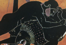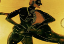who ravaged the country side. Heracles kills it with his club. In some versions, he kills the beast by strangling it and flaying it with its own claws, because the skin of the lion was said to be invincible. The lion skin and the club are his chief attributes in art. (see images 1–2)
{kind=link}
{kind=link}
2) Lernaean Hydra: there was a serpent which lived in the swamps of Lerna, by Argos. It had 9 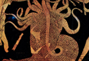heads, 8 mortal and 1 immortal. Each time Heracles cut off a head, two grew in its place. Hera also sent a huge crab to assist the Hydra. Heracles first kills the crab by himself. Next, he kills the Hydra with the help of his nephew Iolaus. As Heracles cuts of the heads, Iolaus burns the stump with a brand so that they could not grow. Heracles buries the immortal head under a rock. Heracles gains poisoned arrows by dipping his arrows in the poison of the Hydra. (see image 3)
{kind=link}
3) Cerynean Hind: Eurystheus asks Heracles to fetch the Cerynean Hind, an example of one of the less violent tasks he undertakes. The hind lived on Mt. Cerynea, had golden horns and was sacred 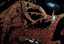to Artemis. It was not dangerous, but it could not be harmed without making Artemis angry. Hepursues it for a year and when he catches it brings it back to Eurystheus. Artemis meets him and takes back her animal, but is appeased because Heracles blames it on Eurystheus. In another version, Heracles goes to the land of the Hyperboreans, at the ends of the earth in the far north, to fetch the beast. (see image 4)
{kind=link}
4) Erymanthian Boar: the boar was a vicious animal that lived on Mt. Erymanthus. Heracles 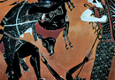chases the boar into snow and traps it with nets. He brings it back to Eurystheus, who terrified hides in a jar. On the way to kill the boar, Heracles was entertained by the centaur Pholus. When ajar of wine was opened, many centaurs came and attacked Heracles. He fought them off and wounded the immortal Chiron in the process, with one of his poisoned arrows. Chiron suffered until he was relieved of his immortality by Zeus and Prometheus. Pholus also died by dropping one of the arrows on his foot. (see image 5)
{kind=link}
5) Augean Stables: a more mucky task. Augeus, the son of Helios, the king of Elis had large 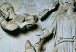numbers of cattle. Eurystheus orders Heracles to clean out his stables. Heracles does this by diverting the rivers Alpheus and Peneus to flow through the stables. Augeus had agreed to reward Heracles with 1/10 of his cattle as a reward, but in the end did not honour this. After he finishes his 12 Labours, Heracles therefore returns to Elis with an army and kills Augeus. These rivers are close to Olympia, and Heracles is sometimes said to have established the Olympic games. (see image 6)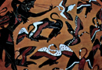
{kind=link}
{kind=link}
6) Stymphalian Birds: these deadly birds which killed men, all flocked together at a lake in Arcadia called Stymphalus. Heracles shoots them with arrows. He first flushes them out by clashing together bronze castanets which had been given to him by Athena. (see image 7)
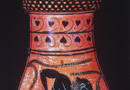7) Cretan Bull: This labour overlaps with the labours of Theseus. Heracles must go and fetch the great bull which Poseidon had sent to Minos. Heracles brings the bull back to Eurystheus, after which it is turned loose. As you will recall, Theseus later finds it at Marathon and sacrifices it. (see image 8)
{kind=link}
8) Mares of Diomedes: deadly man-eating horses are always a problem. King Diomedes of Thrace, in the north of Greece (do not 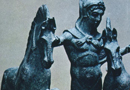confuse him with Diomedes, the hero who fights at Troy) had a herd of such horses. Heracles (in some versions with the help of an army) tames the mares by feeding Diomedes himself to them. He brings them to Eurystheus, who sets them free. (see image 9) On the way to do this he helps Admetus, the king of Pherae, by wrestling death (Thanatos) and thereby bringing back to life Admetus’ recently deceased wife Alcestis.
{kind=link}
9) Girdle of Hippolyta: Hippolyta is the queen of the Amazons, a fierce tribe of powerful and savage warrior women who live at the northern edges of the world. Heracles had to get her girdle. 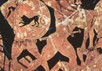He defeats her in battle and takes it. (see image 10) On his way back, he stops at Troy and saves Hesione from a sea monster. Hesione is the daughter of Laomedon, an early king of Troy, for whom Apollo and Poseidon built the walls of Troy. After they did so, however, Laomedon did not sacrifice to them. They sent the sea monster as punishment which the oracles said could only be appeased by the sacrifice of Hesione. This story of Hesione overlaps obviously with the myth of Perseus and Andromeda.
{kind=link}
10) Cattle of Geryon: Geryon (see image 11) lived on the island of Erythia in the far west of the 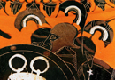Mediterranean. He had three bodies and tended a herd of cattle, helped by a giant Eurytion and a two-headed dog Orthus. Heracles is tasked with bringing the cattle back to Eurystheus. He goes to the island with the help of Helios, who gives him a golden cup in which he could sail on the ocean to reach Erythia. He kills Geryon and his gang and sails back in the cup to Spain with the cattle, where he gives the cup back to Helios and then drives the cattle to Greece. As a monument in the far west, he set up the Pillars of Heracles at the entrance to the Mediterranean from the Atlantic (identified with the rocks of Gibraltar).
{kind=link}
11) Apples of the Hesperides: The Hesperides are the three daughters of Night, who live again in the far west (in Greek the name Hesperides indicates their connection with the west, where the sun sets: esperos, from which the English vespers derives). They guarded a tree which produced 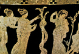golden apples which a great serpent, Ladon, protected. (see image 12) The apples had originally been a wedding gift from Gaia (Earth) to Hera when she married Zeus. Heracles’ job was to retrieve the apples. He first had to find the sea-god Nereus, to find out where the tree was. Heracles grabs Nereus and holds him tight, at which point Nereus provides the information. In one version, Heracles kills Ladon and fetches the apples himself. In another, he holds up the world for Atlas, while he goes and gets the apples for Heracles. After Heracles takes the apples back to Eurystheus, Athena takes them back to the Hesperides.
{kind=link}
12) Cerberus and Underworld: the last labour of Heracles is perhaps most obviously connected to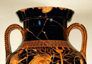his defeat of death. He must bring Cerberus, the three-headed guard dog of Hades, to Eurystheus.In this he is helped by both Hermes and Athena, who escort him in and out of the Underworld. He wrestles with Cerberus, brings him to Eurystheus and then returns him to the underworld. (see image 13)
{kind=link}